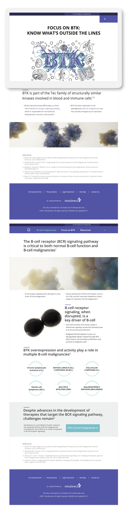
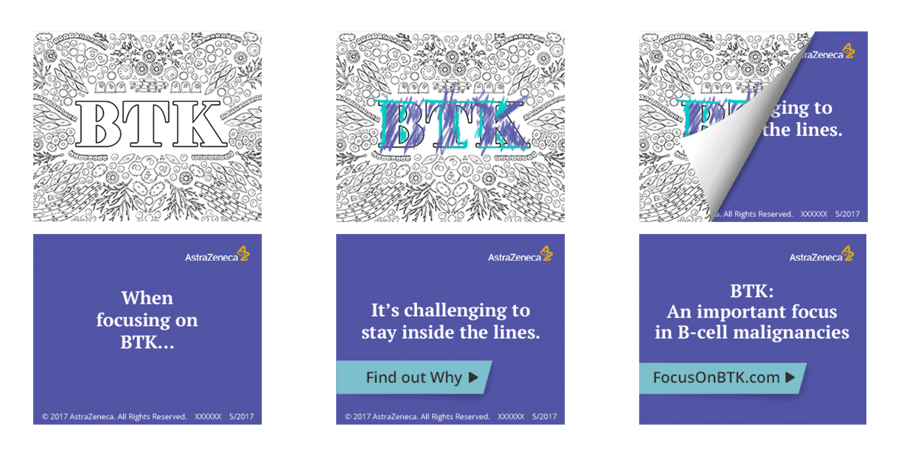
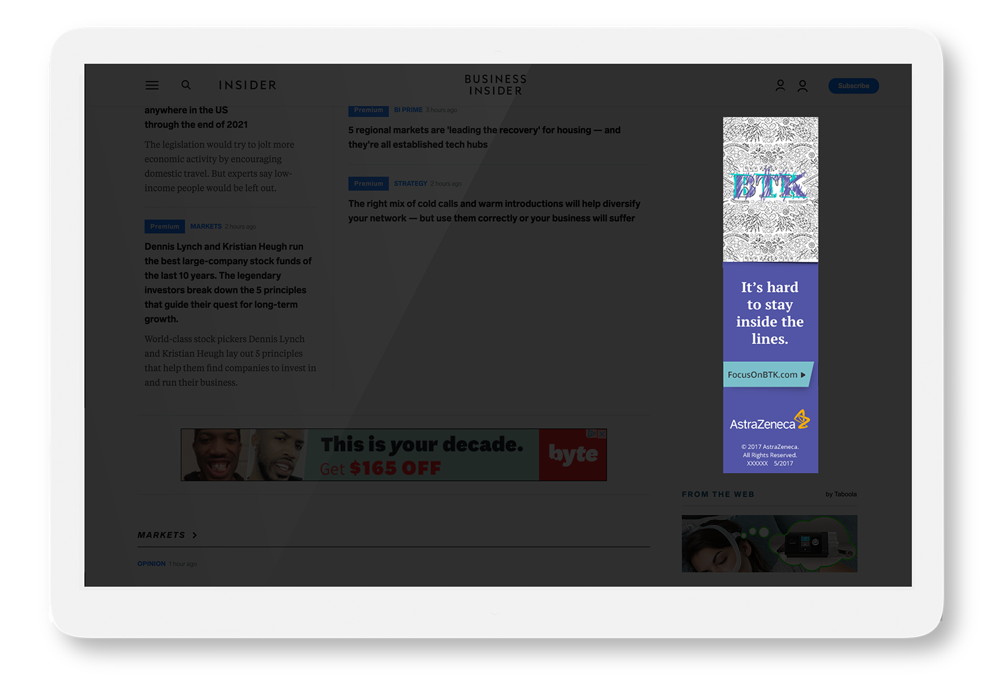

BTKi Education · Brand & Systems Design
Overview
BTK inhibitors are central to treating certain cancers and autoimmune diseases, but the underlying biology is dense and the treatment pathways aren’t intuitive. Healthcare professionals needed a clearer way to understand BTK’s role in B-cell malignancies without wading through material that read like a research paper.
BTK’s role in B-cell malignancies involves mechanisms that can’t be simplified without losing clinical accuracy. The design problem was sequencing and framing, not dumbing down.
Everything had to clear medical, legal, and regulatory review. That limits options fast, and every creative decision had a compliance gate attached to it.
Strategy
Educate Without Advocating
Staying unbranded was not just a compliance requirement. It shaped every creative decision. The experience had to educate without selling and inform without advocating.
The microsite was designed around how an HCP actually moves through information: scanning before reading, looking for hierarchy, absorbing quickly between patients.
Content was structured around learning milestones rather than linear scroll so HCPs could enter at the right point for their level of understanding. Visual hierarchy broke complex mechanisms into discrete learning moments. Spacing, sequencing, and deliberate use of white space managed density without making users feel led through the material.
Every element cleared medical, legal, and regulatory review at every stage.
Scientific artwork translated into a cohesive interactive system, designed as part of the experience rather than dropped in as illustration.
BTK’s role clarified through structured visuals that inform without making arguments for the HCP.

Microsite
The microsite was the primary educational destination, a self-contained experience designed to deliver BTK mechanism education without the noise of a branded environment. Every design decision was made with one user in mind: an HCP between patients, scanning for information they could act on.
Content structured around how HCPs actually process information, scanning before reading, absorbing hierarchy before detail, entering at the right point for their level of understanding.
The unbranded environment removed the incentive to discount the content. Clinical education delivered without the sales layer, allowing the science to speak without an argument attached.

Display Campaign
Display ads in clinical and pharmaceutical environments are easy to ignore. HCPs have seen enough static placements to filter them out entirely. The strategy was motion, variation, and a clear message: drive HCPs to the microsite where the science could do the real work.
18+ ad unit variations built to interrupt banner blindness through motion and message variation, designed to stand out in clinical placements without breaking the compliance framework.
Every ad unit had one job: move the HCP to the microsite. The campaign wasn't trying to educate in the banner, it was creating enough curiosity to earn the click into the deeper experience.

Outcomes
HCPs don’t have time to search for understanding. The experience delivered what they needed at the right moment: accurate science, clear hierarchy, and no noise between them and the information.
Complex mechanisms digestible without losing clinical accuracy.
Structured learning milestones kept HCPs in the experience longer than linear scroll would have.
Zero unbranded violations across medical, legal, and regulatory review.
Dynamic units outperformed static formats across clinical placements.